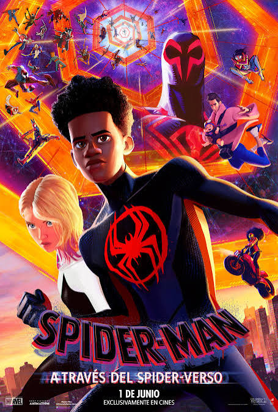
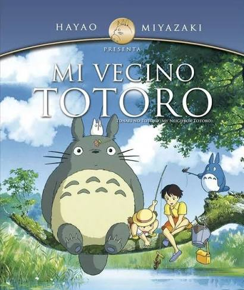

La película A dos metros de ti trata sobre Stella y Will, dos adolescentes que padecen fibrosis quística, una enfermedad que afecta sus pulmones. Ambos se conocen en el hospital y, a pesar de sus diferencias, poco a poco se enamoran. Sin embargo, no pueden acercarse ni tocarse, ya que existe el riesgo de contagiarse bacterias que podrían empeorar su salud. A pesar de esta dificultad, Stella y Will encuentran maneras de demostrar su amor y disfrutar del tiempo que pasan juntos. Durante su relación, aprenden a valorar la vida, a enfrentar sus miedos y a luchar por sus sueños. Finalmente, Will decide alejarse de Stella para protegerla, aunque eso signifique renunciar a estar con la persona que ama.

Spider-Man: Un nuevo universo trata sobre Miles Morales, un adolescente que obtiene poderes de araña y conoce a otros Spider-Man de diferentes dimensiones. Juntos deben detener a un villano que amenaza sus universos. Durante la aventura, Miles aprende a confiar en sí mismo y descubre que cualquiera puede convertirse en un héroe
Miles Morales vuelve a vivir una aventura cuando se reúne con Gwen Stacy y conoce a otros Spider-Man de diferentes universos. Juntos deben enfrentar una nueva amenaza, pero Miles descubre que no todos están de acuerdo con lo que debe hacer para salvar a quienes ama. Durante su viaje, aprende a tomar sus propias decisiones y a luchar por su destino.
La película cuenta la historia de Chen Nian, una estudiante que sufre acoso escolar mientras se prepara para los exámenes de ingreso a la universidad. Después de una tragedia en su escuela, su vida se vuelve aún más difícil y conoce a Xiao Bei, un joven que vive en la calle y que también enfrenta muchos problemas. Con el tiempo, ambos desarrollan una relación especial y encuentran apoyo el uno en el otro. Mientras Chen Nian lucha por conseguir un futuro mejor, Xiao Bei intenta protegerla de la violencia y las dificultades que la rodean. La película aborda temas como el bullying, la presión académica, la soledad, la violencia y el sacrificio por amor.

La película trata sobre dos hermanas, Satsuki y Mei, que se mudan al campo con su padre mientras su madre está hospitalizada. Allí descubren criaturas mágicas del bosque, entre ellas Totoro, un espíritu amable y gigante que las acompaña en sus aventuras. Juntas viven experiencias maravillosas y aprenden sobre la familia, la imaginación y la naturaleza.